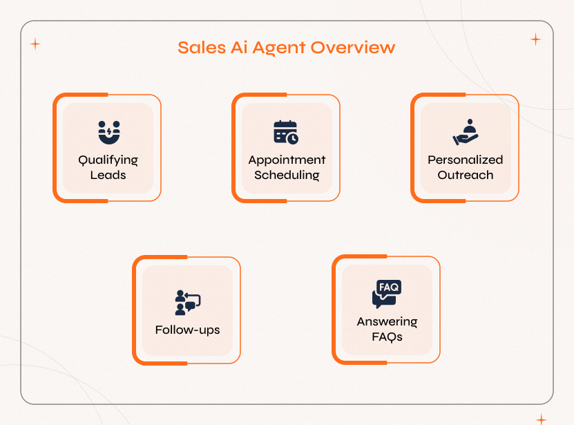
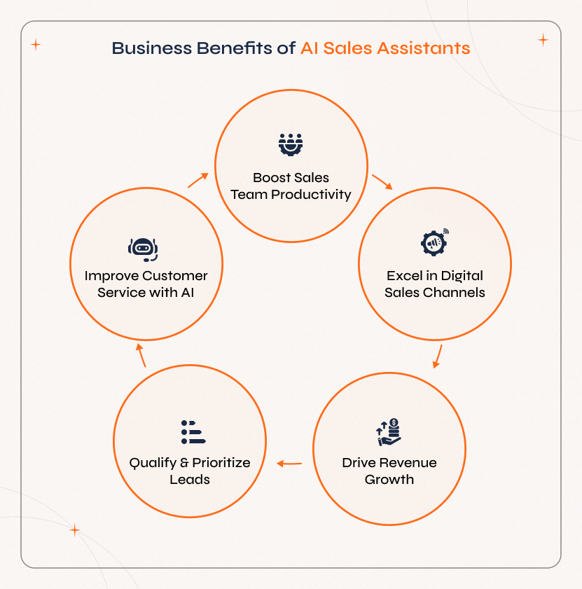
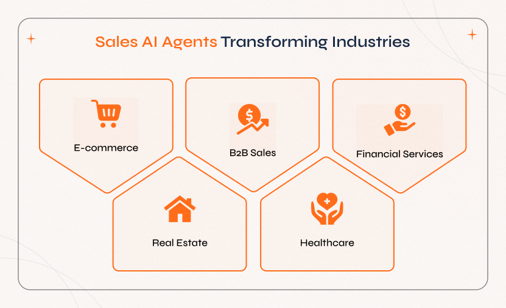

The most important factor for any business is sales. But in the age of AI, have you noticed that some companies are doing exceptionally well? At the same time, some are struggling to even get leads. If you're a business owner who’s wondering, “Are they using AI agents?” Then you are spot on.
Sales AI agents are emerging as a powerful tool for businesses of all sizes. It’s a secret weapon that we all sort of know about but no one really reveals how they work.
In this blog, we will uncover all the secrets. We will discover what a sales AI agent is, how they can benefit your business and, of course, how you can implement them.
Let’s start the deep dive.
How Powerful is a Sales AI Agent? - An Overview of Their Capabilities
In a nutshell, you can say that a sales AI agent is like one of your sales representatives. Most people, when they think about artificial intelligence in 2025, they think about ChatGPT or Gemini. You ask a chatbot some questions and you get quick answers.
However, an AI agent for sales or sometimes called an AI sales engineer, is more capable and can perform tasks on their own. Just like a human sales development representative, a sales AI agent can find leads, talk to them, do follow-ups, and more.
They are designed to automate many of the activities you do in your sales department. This allows your human reps to focus on solving more complex problems for customers.
Let’s see some of the tasks a sales AI agent can do:

1. Qualifying Leads
Experienced sales reps know that not everyone is willing to purchase a product or service. For example, if you reach out to a flower shop owner to try and sell billing software, you can’t assume that they will buy.
The sales rep looks at many factors when they reach out to a prospect. This can be the location of the shop owner, their customers, and so on. They then ask questions about existing solutions they might use through calls and such activities. This allows sales reps to create a list of leads that are most likely to buy the solution.
A sales AI agent can automate this process and provide you with a list of pre-qualified prospects who are most likely to buy your product or service.
2. Appointment Scheduling
Scheduling appointments is a big part of the sales process because customers only buy from people they trust. Even after you book calls, your sales reps will have to give demos, create proposals, and explain your offering before they can close a deal.
While this is important, this is a time-consuming and repetitive task. AI agents can automate this too, especially with generative AI. The agent can automatically book appointments, show entire product demos, and answer any customer questions.
3. Personalized Outreach
Reaching out to potential customers is as much of an art as it is a science. Because it’s not just about sending the same message to everyone. Expert sales reps spend a lot of time personalizing outreach messages for each prospect. This is because no one is going to open your messages or emails otherwise.
What if you could turn this from a 6-hour process to a 10-minute process instead? This is what AI outreach agents do. These agents can search through thousands of customer profiles, collect relevant data, fill in the missing data, and craft compelling messages.
They can then automatically send the messages without your sales rep lifting a finger. Now, you only have to spend time on prospects that respond to your outreach, maximizing your sales efficiency.
4. Follow-ups
Many experienced sales reps will tell you that most deals close in follow-ups. This is because you have to build credibility with the customer. And then provide them with value before they hit the buy button. Nurturing leads is a very important part of the sales funnel.
However, millions of dollars of deals are missed every day because someone forgot to follow up. With AI sales Agents, you can send on-time follow-ups with tailored messaging easily.
Here, you don’t even have to tell the AI agents to follow up. They can automatically analyze which leads are at what stage, and then send follow-ups based on that.
5. Answering FAQs
Answering customer queries is a big part of the lead nurturing process. This is because most people inquire multiple times before they buy. Not all of the inquiries will be potential buyers. However, engaging with them is the only way to find the real buyers.
Similarly, providing customers with instant responses to their questions is essential to boosting satisfaction. With a conversational sales AI agent, you can automate FAQ answering without a large team of executives being online 24/7.
Instead, you can implement an intelligent chatbot that can answer multiple customer queries simultaneously 24/7. The chatbot will be able to answer questions dynamically because you have trained the AI model with your own data.
Points to Underline:
- It's important to note that the goal of an AI sales agent is not to replace human sales teams.
- However, your team of 10 employees will be able to do the work of a team of 100 employees.
- Automating routine, repetitive tasks allows your sales teams to focus more on building customer relationships.
- This is driving many businesses to actively explore how to use AI in sales to improve efficiency.
Talk to our experts to boost your sales with AI.

How Businesses Are Benefiting From Integrating AI Sales Assistant Software (with Some Real-World Metrics)
Including a sales AI agent in your business strategy gives you a lot of advantages. It can improve your sales performance and overall business growth. Now, let’s explore some of these benefits and AI agent use cases in sales with some quantifiable numbers.

1. Improving Your Sales Team’s Productivity and Efficiency
One of the most important advantages of using AI agents for sales is their ability to free up your sales teams from time-consuming, repetitive tasks. Sales professionals often spend the most time on activities that don’t directly involve selling.
This can include tasks like data entry, lead research, and initial outreach. In fact, sales representatives reportedly only spend 32% of their time actually selling.
By automating these tasks, AI agents allow your sales team to dedicate more time and energy to engaging with prospects, building relationships, and closing deals. This ultimately leads to better productivity and efficiency.
2. Engage Better in the Digital Sales Landscape
Just about every business today interacts with its customers through digital channels. The shift happened long ago with the invention of the internet and social media and smartphones have amplified this.
However, the world is moving at a faster pace and businesses have to adapt if they want to stay competitive. An AI sales assistant, particularly AI chatbot sales agents, are crucial for effectively engaging with potential customers in the online world.
Technology firm Nibble has cited Gartner's prediction about how 80% B2B sales interactions between suppliers and buyers will happen digitally without actual sales professionals. This was back in 2025, which holds true today with AI agents.
In this global scenario, it is important to implement AI-powered tools like AI agents. This ensures that your business can provide seamless, personalized, and efficient interactions with prospects across various digital touchpoints.
3. Significant Increase in Sales Performance and Revenue
The ultimate goal of the sales initiatives of any business is to drive revenue growth. Integrating AI agents for sales has a proven record of delivering substantial improvements in sales performance by now.
In fact, companies using these solutions see a 50% increase in their engagement rate and a 35% increase in their conversion rate. A sales AI agent can directly contribute to a significant uplift in your overall sales figures and revenue generation. They do this by enhancing engagement and improving conversion rates.
4. Enhancing Leading Qualification and Prioritization
By now, you would have understood that not all leads are created equal. Identifying and focusing on the most promising prospects is essential for maximizing your sales efforts. AI agents for sales excel at analyzing data and identifying patterns that indicate a higher likelihood of conversion.
Businesses using AI in sales processes have increased lead conversion by 50%. This is because of their ability to more accurately qualify and prioritize leads. And this ensures that your sales team spends their valuable time on the highest potential prospects.
5. Improving Customer Service with AI Chatbots
The world is fast-paced and customers expect quick responses to their queries. AI chatbot sales agents play a crucial role in this. They can provide instant support and enhance customer engagement.
The advanced chatbots you can build today can handle a wide range of inquiries with impressive accuracy. They can resolve up to 80% of routine customer service questions without ever needing a human executive.
By handling common questions and providing immediate assistance, AI chatbots improve customer satisfaction. They also reduce the workload on your human customer service team. They can even guide customers through the initial stages of the sales process.
Outlining the Actionable Steps to Implement a Sales AI Agent in Your Business
Starting out on the journey of implementing an AI agent in sales strategy requires a structured and thoughtful approach. Here is a simple 7-step guide to help you get going.
1. Conduct a Thorough Analysis of Your Sales Process
Begin by deeply examining your current sales workflow. Identify the key pain points, bottlenecks, and repetitive tasks that take your valuable time. This will help you find the specific areas where a sales AI software can provide the most impact.
For example, are your sales reps spending too much time on initial lead outreach or struggling to manage follow-ups effectively? This could be an area where a sales AI agent can help.
2. Research and Select the Ideal AI Agent Solution
Explore the top AI agents for sales and marketing automation available in the market or build a custom solution. Consider factors such as integration capabilities with your existing CRM, user-friendliness, and specific solutions.
The solutions can include a lead generation agent, an AI chatbot sales agent for customer engagement, and so on. It is also important to keep an eye out for how scalable the agent solution is and how much it costs.
3. Define Clear and Measurable Objectives
Before you implement your AI agent, establish specific, measurable, achievable, relevant, and time-bound (SMART) goals. Do you aim to increase qualified leads by a specific timeframe? Or perhaps reduce the average sales cycle length?
Having clear objectives will allow you to track your progress and evaluate the ROI of your machine learning sales agent.
4. Ensure Seamless Integration with Existing Systems
A crucial aspect of successful AI implementation is ensuring that your chosen sales AI agent integrates seamlessly with your existing technology stack. Integration with CRMs and marketing automation platforms is essential. This will allow for a smooth flow of data and maximize the effectiveness of your AI agent.
5. Invest in Training Your Team
The success of your sales AI agent also depends on who uses it. AI agents can work on their own but they have to complement the work that your sales team does. It is always a good strategy to train your team thoroughly on how the AI agent works and how to use it effectively. For most businesses, AI agents will reduce the need for large sales teams. So, your smaller team has to be proficient in using the capabilities of your sales AI agent for success.
6. Implement Your Sales AI Agent in Phases
A phased rollout is the best option, especially if you have an established sales process in place. You can consider starting with a pilot test and see how your AI agent performs. This approach allows you to sort out issues and inefficiencies early on so that you have a solid sales pipeline on full launch.
7. Continuously Monitor Performance and Optimize
Just as the market continuously evolves, so should your sales AI agent. It is important that you constantly monitor your AI agents. Check them for performance and update them according to changing market conditions. This will not only improve your sales process but also refine the autonomy of your sales AI agent.
Ready to Implement a Sales AI Agent?
Turn your strategy into action with our expert guidance.
The Impact of Sales AI Agents Across Different Industries
So far, we have covered how and why businesses are adopting sales AI agents. But as a business owner, it can be difficult to understand how your business can integrate a sales AI agent. So, let’s look at some real-world examples of AI agents for sales in action, in different industries.

1. E-commerce:
Personalized Product Recommendations and Upselling
An AI sales agent for e-commerce websites can analyze a customer’s browsing history, past purchases, and items in their shopping cart. They can then provide personalized product recommendations in real-time. For example, if a customer is viewing a laptop, the AI agent might suggest compatible accessories. This could be a mouse, headphones, or a laptop backpack. This increases the average order value.
Proactive Customer Support and Sales Assistance via Chatbots
An AI-powered chatbot on the e-commerce website can proactively engage with visitors who seem to be struggling or have questions. It can answer FAQs about products, shipping, and returns. It can even guide users through the checkout process. If a customer abandons their cart, the chatbot can follow up with a personalized message and offer assistance or a discount.
Handling Customer Inquiries via Voice AI Agents
An e-commerce business can integrate voice agents, which can work similarly to Alexa or Google Assistant. Customers can use voice commands to inquire about product availability, track orders, or even make purchases. The AI agent can process these voice commands and provide relevant information or complete transactions.
2. B2B Sales
Intelligent Lead Scoring and Prioritization
An AI agent can analyze various data from CRMs, marketing automation platforms, and external sources to score leads. This helps sales teams prioritize their outreach efforts on the most promising leads, improving efficiency and conversion. For instance, leads who have engaged with multiple pieces of content. If they requested a demo, they might fit the ideal customer profile and receive a higher score.
Automated and Personalized Sales Outreach
An AI agent can automate initial outreach to qualified leads with personalized emails or messages on social media. The sales AI agent can automatically analyze the lead’s industry, company size, and specific interests through their online activity. This ensures that the first touchpoint is relevant and engaging. And this increases the chances of a positive response.
AI Voice AI Agent for Sales Calls
Sales calls, especially cold calling, are often difficult because sales reps have to make hundreds of calls a day. An AI voice agent can automate this by automatically calling prospects and having human-like voice conversions. This gives businesses unlimited power to scale their sales efforts.
3. Financial Services
Personalized Financial Advice and Product Sales
An AI agent can analyze a customer’s financial data, goals, and risk tolerance to provide personalized advice. This could be for investment options, savings plans, or loan products. For example, if a customer expresses interest in savings for retirement, the AI agent can suggest suitable investment portfolios.
Automated Customer Onboarding and Account Management
The AI agent can guide new customers through the onboarding process and help them with different tasks. This can be filling out applications, verifying their identity, or setting up their bank accounts. It can also handle routine account management tasks. For instance, updating contact information or answering questions about account balances.
Proactively Identifying Sales Opportunities
The AI agent can analyze customer data to identify potential sales opportunities. For example, it might identify customers who are eligible for a credit card upgrade. Or who could benefit from a specific insurance product. The agent can review data like the customer’s current asset holdings and spending patterns to understand what to recommend.
4. Real Estate
AI-Powered Virtual Property Tours and Information
An AI agent can power interactive virtual tours of properties online for potential buyers. This allows home buyers to tour the home remotely and access information about the property’s amenities, and neighborhood. A voice AI agent can even answer questions about the property during the tour using voice or text.
Automated Lead Qualification and Property Matching
The AI agent can analyze inquiries from potential buyers or renters, and qualify them based on their criteria. This could be their budget, location, property type, and so on. Then the AI agent can match them with suitable properties from the available listing. All of this happens automatically, saving time for real estate agents.
AI for Follow-ups and Appointment Scheduling
An AI agent can automate follow-up communication with leads who have shown interest in a property. It can also provide them with additional information, answer questions, and schedule tours or calls with a human agent, based on their availability.
5. Healthcare
AI-Driven Consultation Scheduling and Reminders
For healthcare providers, an AI agent can automate the process of scheduling consultations for patients. The agent can also ask preliminary questions to patients through text or voice so that medical professionals have the information.
Outreach for Preventive Care and Wellness Programs
An AI agent can analyze patient data to identify people who might benefit from preventive care services and wellness programs. It can then send personalized messages encouraging them to learn more or schedule a consultation.
AI Chatbots for Answering Insurance and Billing Queries
An AI-powered chatbot can be implemented on a healthcare provider’s website or app to answer customer queries. This can include information about insurance coverage, billing procedures, and payment options. It improves patient satisfaction and reduces the workload on administrative staff.
Traditional Sales Methods vs Sales AI Agent Methods: A Clear Comparison
| Feature | Traditional Sales Methods | AI Agent Sales Methods |
|---|---|---|
| Scalability | Limited by the capacity of human teams | Highly scalable, capable of handling numerous interactions simultaneously |
| Efficiency | Can be time-consuming for repetitive tasks | Automates repetitive tasks, freeing up human agents for important work |
| Personalization | Often relies on generalized approaches | Delivers highly personalized interactions based on data |
| Availability | Typically constrained by business hours | Available 24/7, ensuring continuous customer engagement |
| Lead Qualification | Can be subjective and time-intensive | Uses data-driven and efficient lead-scoring |
| Data Analysis | Manual analysis can be challenging and slow | Provides real-time data and actionable insights for better results |
| Cost-Effectiveness | Higher cost per interaction at scale | Offers lower cost per interaction while maintaining or improving quality at scale |
| Consistency | Performance can vary based on individual sales reps | Ensures consistent and standardized interactions across all touchpoints |
As you think about how to create an AI sales agent for sales optimization, remember that the most important task is to align your solution with your goals. Exploring various sales AI tools for lead generation and conversion is essential. Because you need to understand the exact solution you need.
Empower Your Sales Process with a Sales AI Agent
The integration of sales AI agents represents a big shift in the way businesses view the sales process. A sales AI agent helps businesses by automating the main processes, enhancing personalization, and providing data-driven insights. Embracing AI agents for sales is no longer a luxury, but a strategic necessity for businesses. Businesses that understand this and adapt to the change will thrive in the modern market.
Are planning to explore sales AI agents for our business? Then schedule a call with our expert to get started.
Yokesh Sankar, COO at SparkoutTech